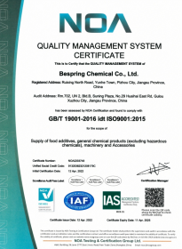
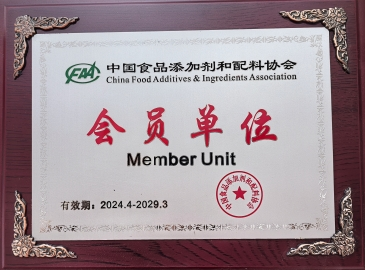
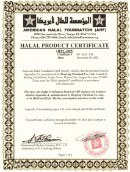
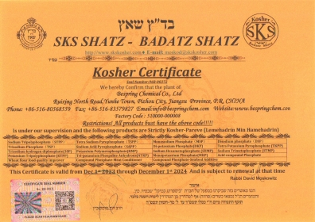

Entidade jurídica correta
Confirmar quais as operações ou atividades abrangidas pelo documento.
Qualidade e conformidade
Suporte a documentos transparentes para compradores que avaliam sistemas de qualidade, adequação do produto e requisitos do mercado-alvo.
Nossa abordagem à documentação
A Bespring fornece documentos de conformidade relacionados com o sistema de qualidade, a adesão à indústria e ao produto para apoiar a qualificação do comprador.
Um certificado só é útil quando a sua entidade jurídica, escopo de aplicação do produto ou atividade, local de produção ou embalagem e período de validade correspondem à oferta que está sendo avaliada. Por essa razão, encorajamos os compradores a solicitar documentos atuais para o produto e a fonte exatos oferecidos.
As imagens nesta página mostram documentos contidos nos registros de Bespring. Seu status atual ou arquivado é indicado individualmente abaixo.
Confirmar quais as operações ou atividades abrangidas pelo documento.
Verifique o material exato e a fonte de produção ou embalagem.
Confira versão, validade e renovação antes da aprovação.
Compare documentos com os requisitos de destino e cliente.
As imagens do site são fornecidas para revisão preliminar. Não as utilize como base exclusiva para aprovação regulatória, religiosa ou do fornecedor. Solicite uma cópia legível atual e verificar seu emissor, escopo, local e validade para a oferta exata oferecida.
Documentos no arquivo
Cada cartão identifica o que o documento exibido diz e se deve ser tratado como atual ou arquivado.

Ver documentoSistema de gestão da qualidade
O certificado apresentado identifica a Bespring Chemical Co., Ltd. e o escopo de serviços de vendas indicado no documento.

Ver documentoParticipação da indústria
O certificado exibido identifica Bespring como uma unidade membro da China Food Additives & Ingredients Association.

Ver documentoDocumento de conformidade religiosa
Esta imagem é retida como referência histórica e não deve ser tratada como prova da atual cobertura do produto.

Ver documentoDocumento de conformidade religiosa
Esta imagem é retida como referência histórica e não deve ser tratada como prova da atual cobertura do produto.
Documentação do produto
Os documentos disponíveis dependem do produto, grau, fonte de produção e destino. Peça os itens relevantes para o seu processo de qualificação.
Solicitar um pacote de documentosIdentificação do produto, parâmetros de referência, aplicações e informações técnicas para avaliação inicial.
Informações sobre identificação, perigos, manuseio, armazenamento e controles no local de trabalho aplicáveis ao material oferecido.
Resultados representativos ou específicos do lote para comparar com as especificações mutuamente acordadas.
Documentos de qualidade atual, segurança alimentar ou conformidade religiosa, quando disponíveis para o produto e local oferecidos.
Checklist de compras
Uma revisão disciplinada impede que um documento com aparência válida seja aplicado à empresa, produto, site ou envio errados.
O nome da empresa jurídica corresponde ao fornecedor ou produtor que está sendo aprovado?
A atividade ou categoria de produto indicado cobre o material que você pretende comprar?
O local de fabricação ou embalagem relevante está incluído, quando necessário?
Os detalhes de emissão, expiração, renovação e suspensão são atuais?
O documento e o organismo de certificação podem ser verificados de forma independente?
Perguntas do comprador
Respostas diretas para equipes de qualidade, regulamentação e aquisição avaliando a Bespring.
O certificado ISO 9001:2015 mostrou validade declarada até 11 de novembro de 2026. O certificado de adesão da CFIA mostrou validade declarada até março de 2029. Solicite sempre cópias assinadas atuais antes da aprovação do fornecedor.
Não. O escopo do certificado pode depender da entidade jurídica, produto, local de produção ou embalagem e do período de validade. Verifique o fornecimento exato oferecido.
Não. As imagens apresentadas Halal e Kosher são referências arquivadas com datas de validade que terminam em 2024. Solicitar documentos de produto e específicos do local de produção atuais antes da qualificação.
Dependendo do produto oferecido, os compradores podem solicitar uma especificação atual, TDS, SDS, COA representativo ou por lote e documentos de qualidade aplicáveis, segurança alimentar ou conformidade religiosa.
Precisa de documentos para qualificação?
Incluir o produto, grau, aplicação, padrão exigido, país de destino e fonte de produção pretendida, se conhecido.